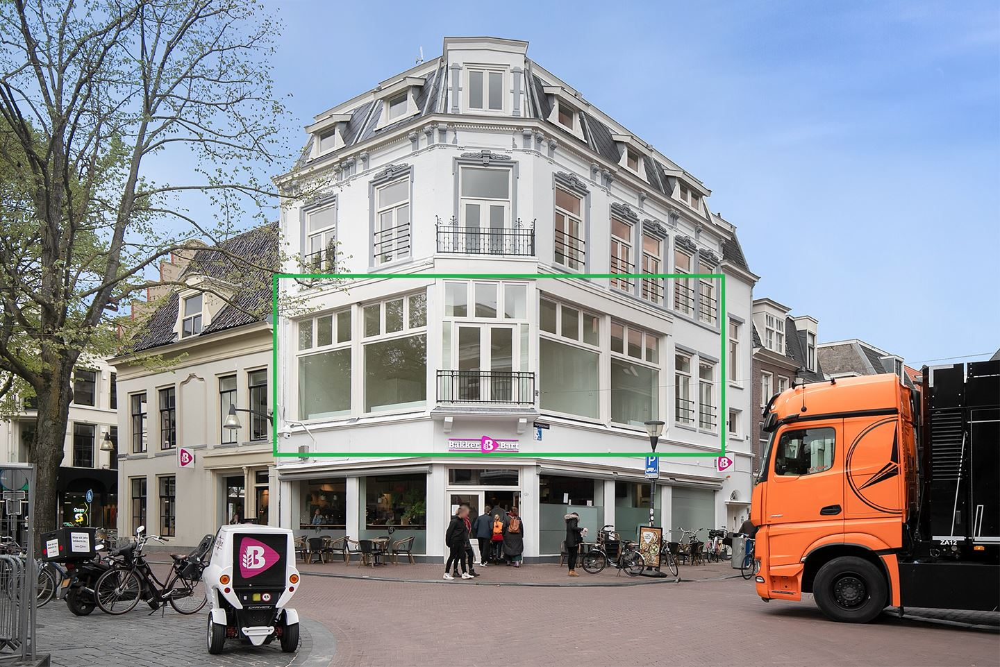
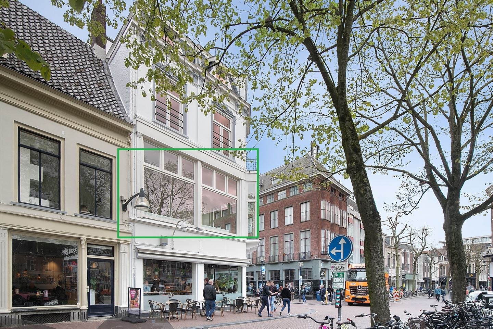
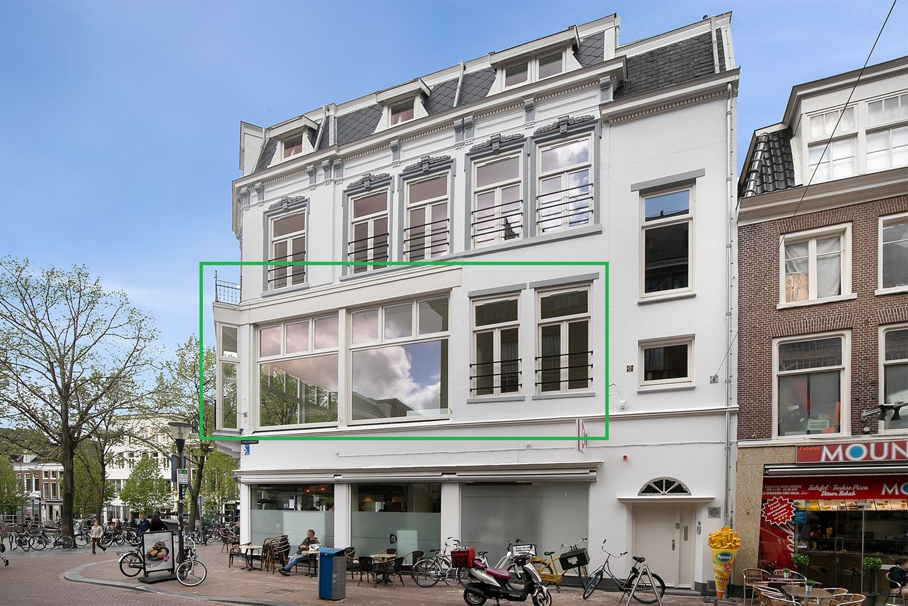

<div class="px-5">
    <div class="relative overflow-hidden w-full h-64">
        <div class="absolute inset-y-0 left-0 flex items-center pl-3 cursor-pointer chevron-left" (click)="prevSlide()">
            <i class="fa-solid fa-chevron-left text-white text-5xl z-20"></i>
        </div>
        <div class="absolute inset-y-0 right-0 flex items-center pr-3 cursor-pointer chevron-right" (click)="nextSlide()">
            <i class="fa-solid fa-chevron-right text-white text-5xl z-20"></i>
        </div>
        
        <div class="absolute inset-y-0 left-0 bg-gradient-to-r from-black to-transparent w-1/5 opacity-40 z-10 h-full"></div>
        <div class="absolute inset-y-0 right-0 bg-gradient-to-l from-black to-transparent w-1/5 opacity-40 z-10 h-full"></div>

        <div class="flex transition-transform duration-500 ease-in-out images h-full    " [style.transform]="transformStyle">
            
            
            
        </div>
    </div>
</div>

